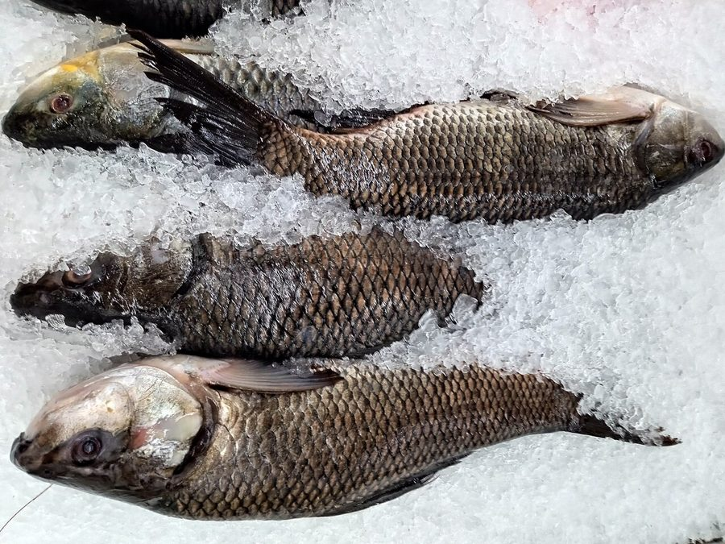

रोहूRohu
Labeo rohita · Cyprinidae · FSH-0001

- Scientific name
- Labeo rohita (Hamilton, 1822)
- Family
- Cyprinidae
- Hindi
- रोहू / रोहु
- Status here
- native
- IUCN
- not evaluated
When to look कब देखें
Present all year.
Rohu (Labeo rohita)
Labeo rohita (Hamilton, 1822) — Cyprinidae
Rohu is the fish of the Ghaghra, the Saryu, and every large talab in eastern UP — the single most culturally and economically important fish in the region. It has been eaten and revered in eastern UP for thousands of years. In modern aquaculture, it is part of the triumvirate (rohu-catla-mrigal) that makes India the world's second-largest fish producer.
रोहू घाघरा, सरयू, और पूर्वी यूपी के हर बड़े तालाब की मछली है — इस क्षेत्र की सबसे महत्वपूर्ण मछली। इसे यहाँ हज़कारों साल से खाया और पूजा जाता रहा है।
हिंदी परिचय Hindi Overview
रोहू (Labeo rohita) भारत की सबसे महत्वपूर्ण खाद्य मछली है। पूर्वी उत्तर प्रदेश में घाघरा और सरयू नदियों के किनारे बसे मछुआरे पीढ़ियों से रोहू पकड़ते आए हैं।
रोहू एक Major Indian Carp (MIC) है — यानी भारत की तीन प्रमुख आर्थिक मछलियों में से एक। बाकी दो हैं: कतला (Catla catla) और मृगल (Cirrhinus mrigala)। इन तीनों को एक साथ तालाब में पाला जाता है — मिश्रित कार्प संस्कृति (mixed carp polyculture)।
रोहू एक mid-water feeder है — न ऊपर से खाता है, न तल से। पानी के बीच में रहकर जलीय पौधों, शैवाल, और जैविक पदार्थ खाता है। यही इसे इकोसिस्टम में एक ख़ास जगह देता है।
Quick Identification शीघ्र पहचान
- Large carp, up to 1 m, 25 kg (typically 40–60 cm in ponds; larger in rivers)
- Silver-grey body with reddish-orange tinge on scales, especially on the sides; each scale edged with a dark outline giving a reticulated (net-like) appearance
- Reddish fins — pectoral, pelvic, and caudal fins tinged red or orange — the most reliable identification feature
- Lips: Thick, fleshy, transversely wrinkled lower lip — the rostral cap (upper lip) prominent and overhanging; characteristic of Labeo
- Terminal mouth — mouth at the front of the snout (vs. inferior in Catla which is downward-facing)
- Scales: Large, cycloid (smooth-edged)
हिंदी — कैसे पहचानें:
बड़ी, चाँदी-लाल मछली।
पंख लाल-नारंगी।
होंठ मोटे, नीचे का होंठ झुर्रीदार।
मुँह आगे की तरफ — Catla की तरह नीचे नहीं।
शल्क पर गहरी रेखाओं से जाल जैसा पैटर्न।
Morphology आकृति विज्ञान
| Measurement | Range |
|---|---|
| Standard length (adult) | 35–60 cm |
| Total length (maximum recorded in India) | 200 cm |
| Weight (typical adult) | 1–10 kg |
Size: Typically 40–90 cm; weight 1–10 kg in ponds; up to 1 m and 25 kg in rivers. Grows rapidly — reaches 1–2 kg in one year under aquaculture.
Body: Laterally compressed (flat-sided), elongated, fusiform (streamlined torpedo shape). Dorsal surface grey to olive; sides silvery with reddish-orange tinge; belly white.
Scales: Large, cycloid (round, smooth-edged); each scale bordered by a darker crescent giving the reticulated pattern. Lateral line scales 40–43.
Head: Moderate-sized; snout rounded; eyes large, lateral. Lips thick, fleshy. Lower lip transversely wrinkled (papillated), with a distinct free edge — diagnostic for Labeo. Rostral cap overhanging the mouth.
Fins: Dorsal with 12–13 rays. Pectoral, pelvic, and caudal fins distinctly reddish-orange in life — this red color fades rapidly after death.
Dentition: No teeth in the jaws; pharyngeal teeth (in the throat) for processing food.
हिंदी: शरीर चपटा-लम्बाई में, धारदार।
शल्क पर काली सीमा — जाल जैसा।
लाल पंख — मृत्यु के बाद रंग जल्दी फीका पड़ता है।
गले में दाँत, मुँह में नहीं।
Ecology and Feeding पारिस्थितिक भूमिका
Feeding strategy: Mid-water herbivore-detritivore. Feeds primarily on:
- Aquatic vegetation (submerged and floating)
- Phytoplankton and algae (filamentous and unicellular)
- Zooplankton (occasional)
- Detritus — decomposing organic matter from the water column and sediment
This makes rohu an important water quality regulator — by consuming algae and detritus, it prevents excessive algal bloom development. In healthy ponds, rohu contributes to nutrient cycling.
Position in food web:
- Feeds on: aquatic plants, algae, detritus
- Predated by: fish eagles (young fish), otters (Lutra perspicillata), Indian Pond Heron (fry), humans
In mixed carp polyculture: The three Indian Major Carps are deliberately co-cultivated because they occupy different feeding niches:
- Catla — surface feeder (zooplankton)
- Rohu — mid-water (algae + plants)
- Mrigal — bottom feeder (detritus)
This tiered feeding avoids competition and maximizes productivity of the pond.
हिंदी: पानी के बीच में रहता है।
शैवाल, जलीय पौधे, और जैविक पदार्थ खाता है।
कतला + रोहू + मृगल — तीनों अलग-अलग परत में खाते हैं।
पानी की गुणवत्ता सुधारने में मदद।
Life Cycle / Phenology जीवन चक्र
- Spawning: June–September; coincides with monsoon floods; in rivers, spawns in fast-flowing, turbid flood water over gravel/sand substrates
- Eggs: Semi-pelagic (float in water column); hatch in 12–20 hours
- Larvae/fry: Feed on zooplankton and phytoplankton initially; reach fingerling stage in 4–6 weeks
- Growth: 0.5–1 kg in first year; 2–3 kg in second year under good conditions; continues growing throughout life
- Sexual maturity: 2–3 years
- Lifespan: 10–15 years
In aquaculture: Breeding is induced using pituitary extract or synthetic hormones in controlled hatcheries. India has perfected induced breeding of rohu; this is a major agricultural technology breakthrough.
हिंदी: जून–सितम्बर: बरसात में अंडे देना।
12–20 घंटे में अंडे फूटते हैं।
पहले साल: 0.5–1 किलो।
जीवनकाल: 10–15 साल।
Agricultural / Human Relevance कृषि और मानव संबंध
Economic importance: Rohu is the highest-value freshwater fish in UP markets. In Basti and Gonda districts, rohu commands Rs 150–350 per kg at retail. It is the primary income source for fishing communities along the Ghaghra, Saryu, and their tributaries.
Nutritional value: Excellent protein source — ~18% protein, rich in omega-3 fatty acids, vitamins B12 and D. In eastern UP, rohu is a critical animal protein source especially in areas with low livestock ownership.
Cultural significance:
- Rohu is served at major festivals in eastern UP — weddings, Eid, Diwali celebrations in fishing communities
- In Bengali and Awadhi cuisine, rohu is considered the "noble fish" — Maa (mother's) fish in some households
- Gifting rohu at a wedding in some eastern UP communities is auspicious
Conservation concern:
- Wild populations in the Ghaghra/Saryu have declined due to sand mining, dam construction, and overfishing
- Pollution from sugar mills (common along UP rivers) reduces oxygen and kills fish
- Aquaculture has partially replaced wild capture but genetic diversity of wild stocks is threatened
हिंदी: यूपी के बाज़ार में Rs 150–350/kg।
मछुआरों की मुख्य आजीविका — घाघरा, सरयू किनारे।
जंगली आबादी घट रही है — नदियों में रेत खनन और प्रदूषण।
Expected Locally स्थानीय रूप से अपेक्षित
Not a field record. Written from published accounts for eastern Uttar Pradesh. No confirmed local sighting yet — if you have seen it, that is what the atlas needs.
अभी तक स्थानीय पुष्टि नहीं। यह विवरण प्रकाशित स्रोतों से है, किसी अवलोकन से नहीं।
| Date | Location | Notes |
|---|---|---|
Distribution वितरण
Global range: Native to South Asia, primarily in the major river basins of India, Pakistan, Bangladesh, Nepal, and Myanmar. It has also been introduced for aquaculture in parts of China, Southeast Asia, and Africa.
In India: Widespread across northern, central, and eastern India, particularly in the Indus, Ganges, and Brahmaputra river basins; introduced extensively to reservoirs and rivers in peninsular India.
In Uttar Pradesh: Present state-wide in all major river systems (including the Ganges, Yamuna, Ghaghra, Saryu, and Gomti), as well as lakes, reservoirs, and aquaculture ponds.
In Basti district / eastern UP: Abundant year-round; found in the Ghaghra and Saryu rivers and widely stocked in village ponds (talab) throughout the district.
Range notes: Global range status has not been formally assessed by IUCN.
Research Questions शोध प्रश्न
Anyone can investigate these | कोई भी इन प्रश्नों की जाँच कर सकता है
- What is the maximum size rohu caught in your local river this year? / इस साल आपकी नदी में सबसे बड़ा रोहू कितना था? — Survey 5 fishers in the monsoon and post-monsoon season; record maximum weight.
- Is rohu present in village ponds without aquaculture? / बिना मछली पालन वाले तालाब में रोहू है? — Net survey a large natural pond; record all species. Does natural rohu dispersal occur via flood connections?
- When exactly does rohu enter village ponds via monsoon floods? / रोहू मानसून में तालाब में कब आता है? — Ask experienced fishers; what month do they first see rohu fry in the talab?
- Does water hyacinth reduce rohu growth in affected ponds? / जलकुंभी वाले तालाब में रोहू कम बढ़ता है? — Compare fish size at harvest from hyacinth-affected and clear ponds with same stocking density.
- What other fish species are found alongside rohu in the Ghaghra? / घाघरा में रोहू के साथ और कौन सी मछलियाँ हैं? — Survey riverside fish markets; photograph and document every species sold.
Similar Species मिलती-जुलती प्रजातियाँ
| Species | How to tell apart | हिंदी |
|---|---|---|
| Catla (Catla catla) | Larger head; mouth inferior (downward-facing); no red on fins; surface feeder | कतला — बड़ा सिर, नीचे मुँह |
| Mrigal (Cirrhinus mrigala) | Paler; no reddish fins; straight lower lip (not wrinkled); bottom feeder | मृगल — सफेद, सीधा होंठ |
| Grass Carp (Ctenopharyngodon idella) | Cylindrical body; scales with dark margin; no reddish fins; more silvery | घास कार्प |
Field rule: Large Indian carp + reddish-orange fins + wrinkled lower lip + mid-water behavior in rivers/ponds = rohu. The red fins fade quickly after death — identify in the water or immediately after capture.
Taxonomy & Classification वर्गीकरण
Original description. Labeo rohita was described by Francis Hamilton in 1822 in his pioneering work on Gangetic fishes (An Account of the Fishes Found in the River Ganges and its Branches, page 301) under the name Cyprinus rohita. Type locality: Gangetic provinces, India. The genus name Labeo is Latin for "one with large lips," referencing the fleshy lips characteristic of the group.
Subspecies. Monotypic — no subspecies are currently recognised.
Family and order placement. Labeo rohita belongs to the family Cyprinidae (minnows and carps) and order Cypriniformes. Cyprinidae is the largest family of freshwater fishes, containing over 3,000 species. Recent molecular phylogenetics (e.g., Yang et al. 2015) has redefined subfamilies, placing Labeo within the subfamily Labeoninae.
Phylogenetic notes. Within the hyper-diverse genus Labeo, L. rohita is closely allied with other South Asian carps like Labeo calbasu (Calbasu) and Labeo gonius (Kurias). No major taxonomic controversies are currently active for this species.
IUCN status rationale. This species has not been formally assessed by the IUCN Red List. Based on ZSI and fisheries records, the population in the Gangetic plain appears stable in managed aquaculture but wild riverine stocks are declining due to habitat degradation and overfishing.
Photo Gallery फोटो गैलरी
Note: Add field photos tomedia/species/rohu/
फोटो निर्देश: ताज़ा पकड़ी मछली (लाल पंख दिखाते हुए), मोटे होंठ (close-up), और नदी में जाल से निकालते समय।
Photos needed आवश्यक फोटो
- [ ] Fresh-caught fish showing red fins (लाल पंख — ताज़ी मछली)
- [ ] Lip close-up — wrinkled lower lip and rostral cap (मोटा झुर्रीदार होंठ)
- [ ] Full lateral view showing scale pattern (पूरा शरीर — जाल जैसे शल्क)
- [ ] In water or from net (जाल में / नदी में)
Atlas Connections संबंधित प्रजातियाँ
- Water Hyacinth — oxygen depletion by hyacinth mats causes fish kills in affected ponds; rohu most affected (FLR-0013)
- Indian Pond Heron — preys on rohu fry in shallow water margins (BRD-0004)
- Ganga River Prawn — co-occurs in rivers and ponds; both are important components of the riverine food web (CRU-0001)
- Freshwater Apple Snail — shares pond habitat; both are harvested from village ponds (MOL-0001)
References संदर्भ
- Hamilton, F. (1822). An Account of the Fishes Found in the River Ganges and its Branches. Archibald Constable and Company, Edinburgh. [original description]
- Yang, L. et al. (2015). Molecular phylogeny of the subfamily Labeoninae (Teleostei: Cyprinidae). Molecular Phylogenetics and Evolution, 92, 10–25.
- Natarajan, A.V. & Jhingran, A.G. (1961). On the biology of Catla catla and Labeo rohita. Indian Journal of Fisheries, 8, 366–424.
- Jhingran, V.G. (1991). Fish and Fisheries of India. 3rd ed. Hindustan Publishing Corporation, New Delhi.
- Zoological Survey of India — Freshwater Fishes of India.
- GBIF Occurrence Data — Labeo rohita, Uttar Pradesh (2000–2024).
- Central Inland Fisheries Research Institute (CIFRI), Barrackpore — rohu production statistics and biology.
Source file: species/fauna/fish/rohu.md